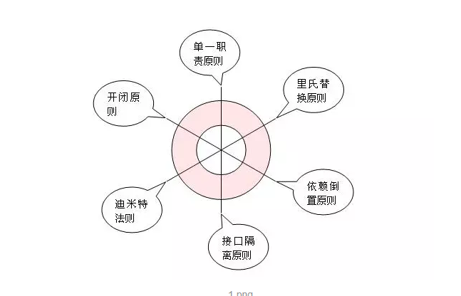
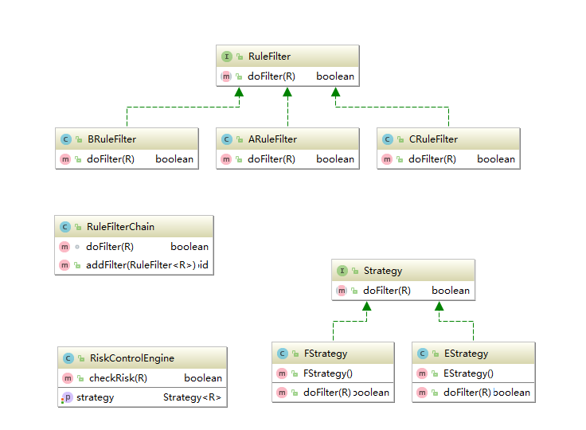
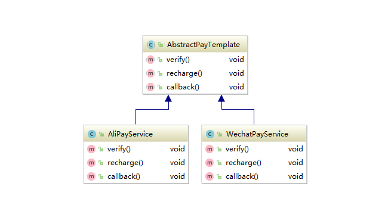

设计模式一览
创建型模式(五种)
- 工厂方法模式(Factory)：工厂创建对象（经典实现：很多框架初始化时都会创建一个工厂对象，用来加载资源）
- 抽象工厂模式(Abstractfactory)：抽象工厂实例创建对象，工厂可修改，灵活度高（经典实现：Struts2插件机制的核心实现就是BeanFactory这个抽象工厂。Spring IOC加载Bean，AOP创建Proxy）单例模式(Sington)：适用于只需要一个对象的情况（经典实现：Tomcat中StringManager的错误处理机制）
- 建造者模式(Builder)：一步一步创建一个复杂的对象（经典实现：MyBatis中的SQLSession就是结合了Configure，executor等对象，以此来实现SQLSession的复杂功能）
- 原型模式(Prototype)：复制对象，包括深度复制和浅度复制，深度复制重建引用对象，浅度复制不创建（经典实现：java序列化）
结构型模式(七种)
- 适配器模式(Adapter)：通过实现接口，依赖注入，继承等方式为不相关的实体建立关系（经典实现：Tomcat新版本连接器Coyote，就是通过为Connector适配建立了ProtocolHandler与Tomcat组件Connector的关联关系）
- 装饰器模式(Decorator)：创建包装对象修饰扩展被包装对象的功能（经典实现：IO家族中BufferedXxx）
- 代理模式(Proxy)：通过添加中间代理的方式限制，过滤，修改被代理类的某些行为（经典实现：Spring AOP核心实现，DataSource中为Connection创建代理对象，改变close方法的行为，使其从开始的关闭连接变成将连接还回连接池）
- 外观模式(Facade)：通过外观的包装，使应用程序只能看到外观对象，而不会看到具体的细节对象。（经典实现：Tomcat中创建外观类包装StandardContext传给Wrapper，创建外观类包装Wrapper以ServletConfiguration的形式传给Servlet，以此来屏蔽不想让Servlet可见的那些Tomcat容器参数）
- 桥接模式(Bridge)：将抽象部分与它的实现部分分离，使它们都可以独立地变化（经典实现：JDBC驱动）
- 组合模式(Composite)：部分与整体，常用于表示树形结构享元模式(Flyweight)：维护资源集合（经典实现：数据库连接池，避免重新开启数据库链接的开销）
行为型模式(十一种)
- 策略模式(Strategy)：定义多个不同的实现类，这些类实现公共接口，通过调用接口调用不同实例得到不同结果（经典实现：Spring中Bean的定义与注入，Controller，Servcie，repository三层架构中只依赖上一层接口）
- 模板方法模式(Template)：父类定义公共方法，不同子类重写父类抽象方法，得到不同结果（经典实现：Tomcat生命周期中的init，SpringIOC上层类加载具体子类指定的配置文件）
- 观察者模式(Observer)：目标方法被调用，通知所有观察者（经典实现：Tomcat生命周期事件监听，Spring BeanPostProcessor实现 ）
- 迭代子模式(Interator)：提供一种方法顺序访问一个聚合对象中各个元素, 而又不需暴露该对象的内部表示。（经典实现：集合迭代器）
- 责任链模式(ChainOfResponsibility)：链式依赖，依次调用（经典实现：Tomcat Valve）
- 命令模式(Commond)：Action定义具体命令，拦截器Invocation回调执行命令（经典实现：Struts2）
- 备忘录模式(Memento)：建立原始对象副本，用于存储恢复原始对象数据
- 状态模式(Stage)：通过改变状态，改变行为（经典实现：切换装载着不同配置信息的配置文件对象）
- 访问者模式(Visitor)：结构与操作解耦。灵活的操作，放入固定的结构中执行（经典实现：在SpringAOP的实现过程中首先会有一个ProxyCreator去创建切入点，通知之类的，然后创建一个抽象工厂将这些参数对象传递给抽象工厂，抽象工厂调用createAopProxy(this)来创建对象，传入不同的抽象工厂创建出不同的实体对象）
- 中介者模式(Mediator)：MVC 框架，其中C（控制器）就是 M（模型）和 V（视图）的中介者解释器模式(Iterpreter)：定义分别定义 + - * / 非终结符，组合不同的非终结符定义不同的表达式，维护繁琐
- 解释器模式(Iterpreter)：定义分别定义 + - * / 非终结符，组合不同的非终结符定义不同的表达式，维护繁琐
设计模式的原则

常见设计模式的典型应用
策略模式&责任链模式
风控服务设计（策略模式+责任链模式）

模板方法
AbstractServiceTemplate
|
|
通过模板方法，支持上述业务，具体业务只用实现具体process方法，就支持幂等逻辑。 符合上述逻辑的就继承这个template就可以满足一下需求了。
支付网关模板
 支付渠道各式各样，常规的就有七八种，支持的全一点的估计要实现20来种，不同的网关都基于同一个模板来实现，不同的渠道有不同的类，比较容易扩展。代码清晰。属于模板方法比较经典的用法。
代理模式
spring aop的用法就是经典的动态代理的用法。比如基于spring的@Aspect。
spring也有ProxyFactoryBean很方便的提供了代理的功能。例如：
|
|
单例模式
单例模式比较常用，但是是基于spring开发，那么单例就比较简单，默认的bean都是一个单例，没必要特意去写单例。基于spring的单例生命周期管理也比较方便。
观察者模式
服务注册服务发现中需要事件通知经常会用到观察者模式，写过类似组件的用的比较多。
JDK中设计模式的应用
Structural（结构模式）
Adapter:
把一个接口或是类变成另外一种。
|
|
Bridge:
把抽象和实现解藕，于是接口和实现可在完全独立开来。
AWT (提供了抽象层映射于实际的操作系统) JDBC Composite: 让使用者把单独的对象和组合对象混用。
|
|
Decorator:
为一个对象动态的加上一系列的动作，而不需要因为这些动作的不同而产生大量的继承类。这个模式在JDK中几乎无处不在，所以，下面的列表只是一些典型的。
|
|
Facade:
用一个简单的接口包状一组组件，接口，抽象或是子系统。
java.lang.Class javax.faces.webapp.FacesServlet Flyweight: 有效率地存储大量的小的对象。
|
|
Proxy:
用一个简单的对象来代替一个复杂的对象。
java.lang.reflect.Proxy RMI
Creational（创建模式）
Abstract factory:
创建一组有关联的对象实例。这个模式在JDK中也是相当的常见，还有很多的framework例如Spring。我们很容易找到这样的实例。
|
|
Builder:
主要用来简化一个复杂的对象的创建。这个模式也可以用来实现一个 Fluent Interface。
|
|
Factory:
简单来说，按照需求返回一个类型的实例。
|
|
Prototype:
使用自己的实例创建另一个实例。有时候，创建一个实例然后再把已有实例的值拷贝过去，是一个很复杂的动作。所以，使用这个模式可以避免这样的复杂性。
java.lang.Object#clone() java.lang.Cloneable Singleton: 只允许一个实例。在 Effective Java中建议使用Emun.
|
|
Behavioral(行为模式)
Chain of responsibility:
把一个对象在一个链接传递直到被处理。在这个链上的所有的对象有相同的接口（抽象类）但却有不同的实现。
java.util.logging.Logger#log() javax.servlet.Filter#doFilter() Command: 把一个或一些命令封装到一个对象中。
|
|
####Interpreter:
一个语法解释器的模式。
|
|
####Iterator:
提供一种一致的方法来顺序遍历一个容器中的所有元素。
|
|
####Mediator:
用来减少对象单的直接通讯的依赖关系。使用一个中间类来管理消息的方向。
|
|
####Memento:
给一个对象的状态做一个快照。Date类在内部使用了一个long型来做这个快照。
|
|
####Null Object: 这个模式用来解决如果一个Collection中没有元素的情况。
|
|
Observer:
允许一个对象向所有的侦听的对象广播自己的消息或事件。
|
|
####State:
这个模式允许你可以在运行时很容易地根据自身内部的状态改变对象的行为。
|
|
####Strategy:
定义一组算法，并把其封装到一个对象中。然后在运行时，可以灵活的使用其中的一个算法。
|
|
####Template method:
允许子类重载部分父类而不需要完全重写。
|
|
####Visitor:
作用于某个对象群中各个对象的操作. 它可以使你在不改变这些对象本身的情况下,定义作用于这些对象的新操作.
|
|
总结
简单的功能或演示性的程序不要考虑设计模式
关注问题而非解决方案。也就是说只有遇到问题时才去设计模式里找方法
关注重用而非设计模式。也就是说设计模式是以重用为目的的，只要能做到重用，是否使用了某种设计模式并不重要
在支持函数式编程的语言里尽量避免使用设计模式。如前所述，设计模式是以重用的目的的，而高阶函数很多情况下是比设计模式更好的重用方法，这些语言包括常见的js, ruby, python,scala等
能用简单的模式解决的问题不要引入复杂的模式
已经有解决方案的情况下不要硬套设计模式，设计模式不是一切
正确认识些暂时无法理解的模式，如Memento, Interpreter, Visitor等，这些模式代表着一类问题，很多时候使用第三方库是更好的选择
参考文档
https://www.jianshu.com/p/807bc228dbc2 https://coolshell.cn/articles/3320.html